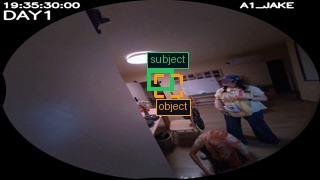
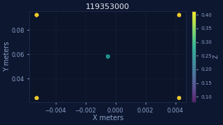

LEFT · 3-axis (E+S+V, no spatial)
Baseline misses the grounded relation
B
correct 0/3axes visual → visual → episodic
R1 visual: [No results] | R2 visual: [No results] | R3 episodic: [No results]
(ladle @ (0.00,0.00,0.19) rel) [in] (bucket @ (0.00,0.00,0.19) rel) [subj_center=(0.00,0.00,0.19) subj_extent=(0.01,0.01,0.04) units=relative] [obj_center=(0.00,0.00,0.19) obj_extent=(0.01,0.01,0.04) units=relative] (other spoon @ (0.00,0.00,0.19) rel) [in] (bucket @ (0.00,0.00,0.19) rel) [subj_c...

Subject and object boxes from the evidence triple, drawn on the decord-extracted middle frame for this chunk.

Up to 500 grounding-sidecar points, plotted in XY with Z encoded as color.